Changelog G3W-Suite 3.7
Release date: 13 December 2023
Changelog for G3W-SUITE 3.7
Version 3.7 of G3W-SUITE is characterized by the release of a module dedicated to the integration of analysis models created on QGIS via ModelDesigner.
This function will allow you to activate analysis models on individual WebGis services and allow such analyzes to be carried out directly in the web environment.
All thanks to the continuous integration of G3W-SUITE with the QGIS API.
Among the main innovations we also remember:
- possibility for logged in users to create filters on layers and save them to retrieve them when necessary
- editing tables related via join
- management of the Relation reference widget linked to 1:N relations
- integration with the OSM and BING APIs for displaying results on the map and saving them on predefined layers
- user/pwd recovery system
- definition of multi-layer editing permissions
- PostGis ratser supported
- …and much more!
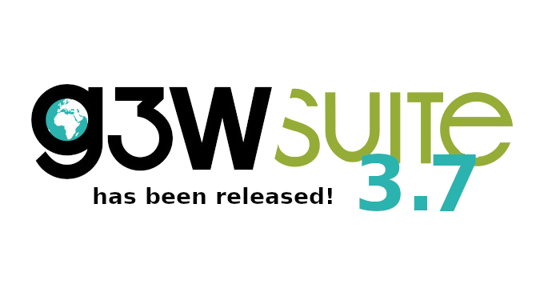
We hope you enjoy this great work!
Happy mapping!
Sponsor and funder
G3W-SUITE is an open source project and if you are able to, consider supporting our work through donations or contributions to the code documentation, web site and so on.
Among the main funder of this version we remember:
Geographical analysis
Feature: Integration of QGIS Processing API
Thanks to this new integration it is possible to import geographical analysis models created in QGIS via the Model Designer and make them available on your WebGis services!
Discover all the news about this feature on the dedicated page.
Administration
Feature: Password recovery system
It is possible to activate the following functions at user log level:
- user name recovery
- password recovery
- obligation to change password upon first login
Recovery is carried out via the email associated with the individual user
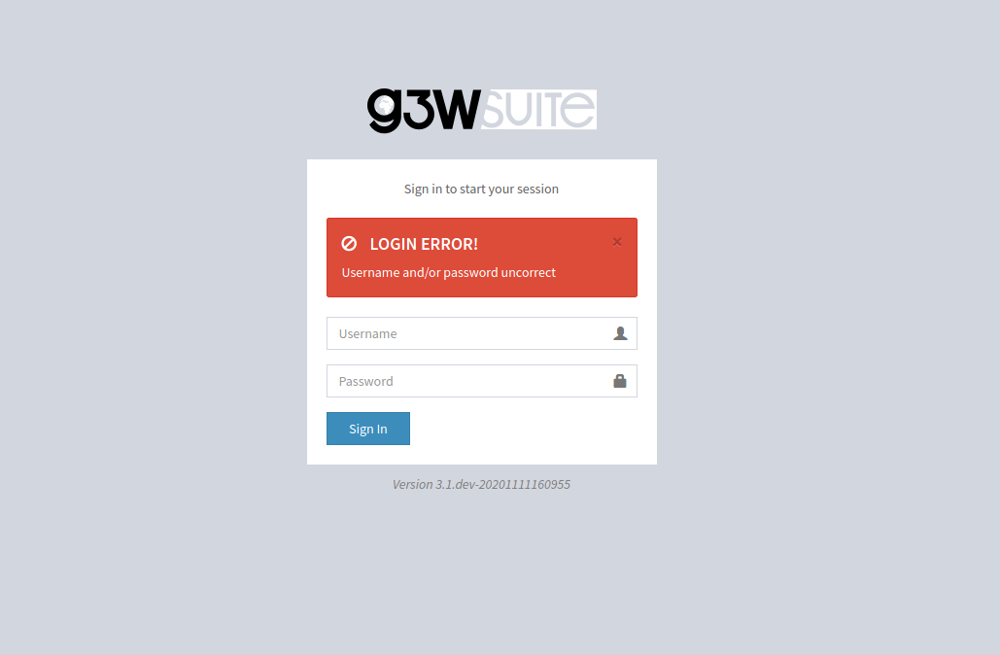
Feature: External user registration system
It is possible to activate a viewer-type external user registration system.
On the Administration side it will be possible to define which user groups to which new users will be automatically associated.
Recovery is carried out via the email associated with the individual user
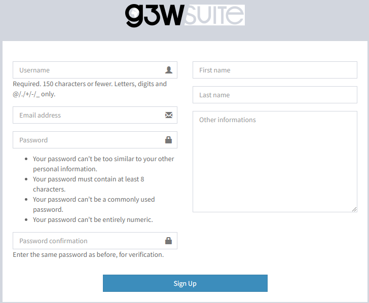
Feature: Creation of user groups
From this version it is possible to define the users belonging to a user group directly when creating the group
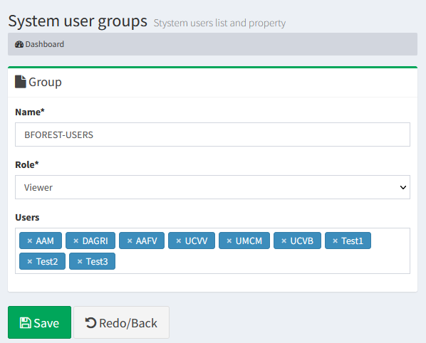
Feature: Give permission to upload geo-data into FileManager section to Editor Level 1 users
G3W-SUITE allows you to create cartographic containers of various levels and associate them, for content management, with administrators (Editor 1 and Editor2) of various levels.
Until now, only the Admin user could upload and manage geographic data on a physical file in the FileManager session.
With this version, Editor1 will also be able to manage cartographic contents on FileManager in a folder dedicated to it, simplifying content management in situations where it is necessary to set up administrator users of different levels.
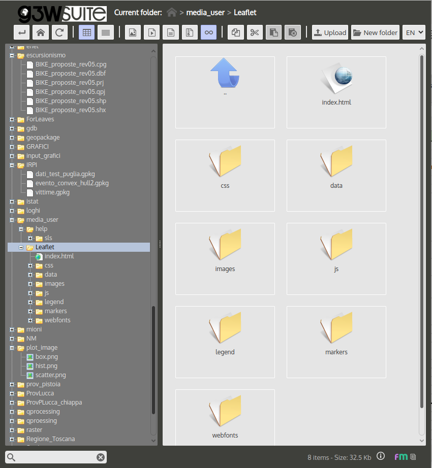
Feature: Format of WMS GetMap response definition
In the publication form of the webgis service it is possible to define the image format of WMS GetMap�request.
The value available will be the standard formats that QGIS server can manage.
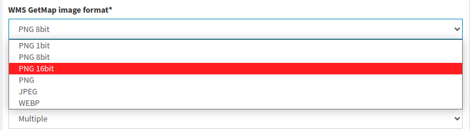
Feature: Set geocoding provide for gecoding map control
In the publication form of the webgis service it is possible to define the geocoding endpoints if the project groups have the ‘geocoding’ mapcontrol (ex ‘nominatim’) active.
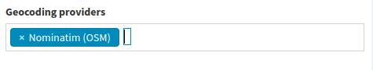
Supported data types
Feature: PostGis Raster supported
PostGis rasters join the other geographic formats supported by the suite.
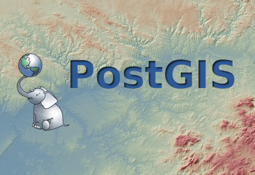
General
Feature: Management of the Relation reference widget (1:N relations)
Inherited from QGIS project
The “Relation references” widget is now managed and inherited by the suite.
It is therefore possible to define an expression to display in place of the foreign key on which the relationship is based.
The expression will be displayed:
- in the editing phase of the related table
- in the values shown on searches based on that layer/field
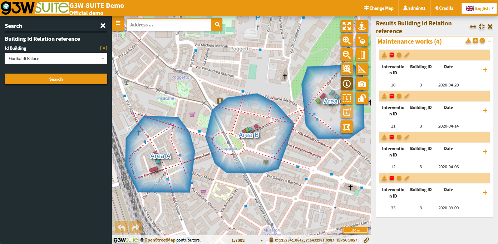
Feature: 1:N relations based on multi fields
Inherited from QGIS project
From this version the suite also manages 1:N relations based on multiple key fields
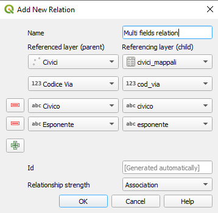
Editing on line
Feature: Editing tables related via join
Inherited from QGIS project
It is now possible to edit tables related with 1:1 and N:1 joins starting from the parent layer.
The function allows you to:
- modify records already present in the joined table and already related
- add new records in the joined table
Feature: Activation/setting of editing on multiple layers at the same time
In case you need to activate online editing on many layers, you can now do it via a new function
- the editing activation scale will be the same for all selected layers
- users and related editing powers will be defined, without differentiation, on all selected layers
- the fields to be used for feature insertion/modification logs can be defined manually
- log recording will only occur for those layers that have fields with that name.
Searches
Feature: Search values based on editing widgets
Inherited from QGIS project
The preparation of a search based on a field of a layer on which one of these widgets is active, on the QGIS side, determines the display of the values defined in the widget also at the level of the values on which the searches are based:
- Value relations
- Value map
- Relation reference
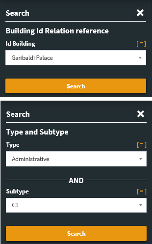
Interaction with the map
Feature: Filters on layers
The function allowing users to set up filters on layers has been enriched.
All the filters created would propagate, with a view to consistency, on:
- features displayed on the map
- attribute table contents
- data underlying the charts
- �editable geometries
Furthermore, if the user is logged in, it will be possible to save the filters created and recover them in any other work session.
Feature: 1:N relations between geometric layers
In the case of a 1:N relation between layers, both geometric, it will be possible to zoom in on the individual child following their visualization starting from the parent
Per il dettaglio completo consulta il manuale ufficiale su ReadTheDocs.